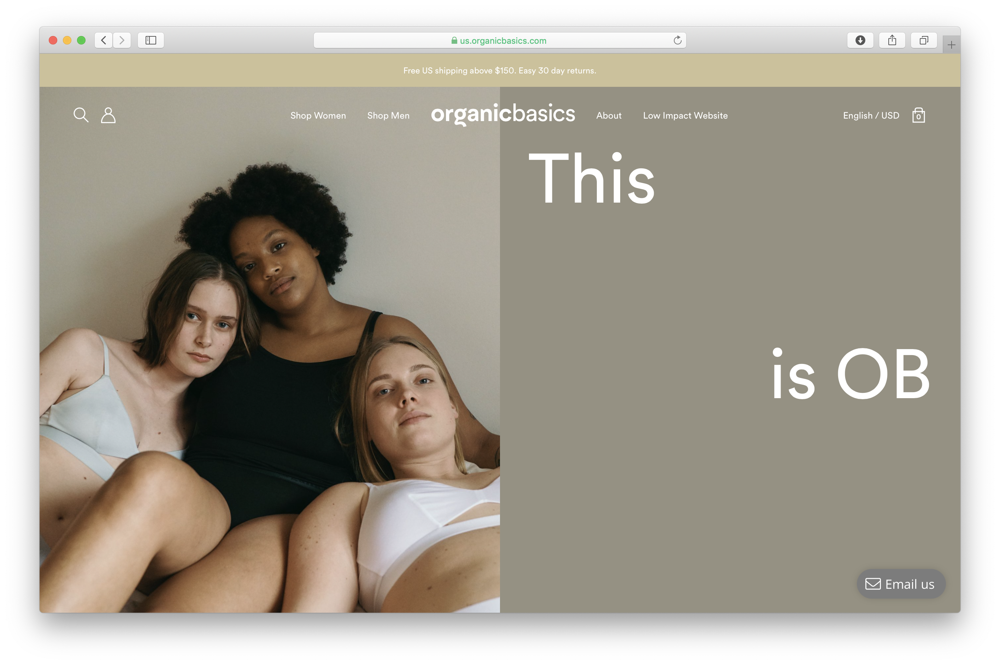
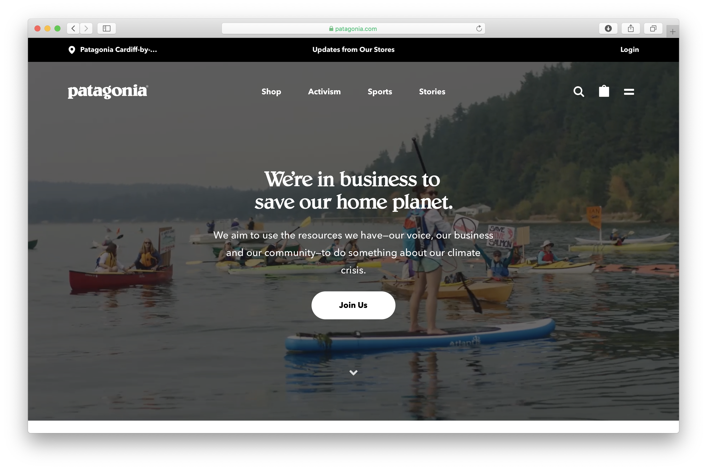
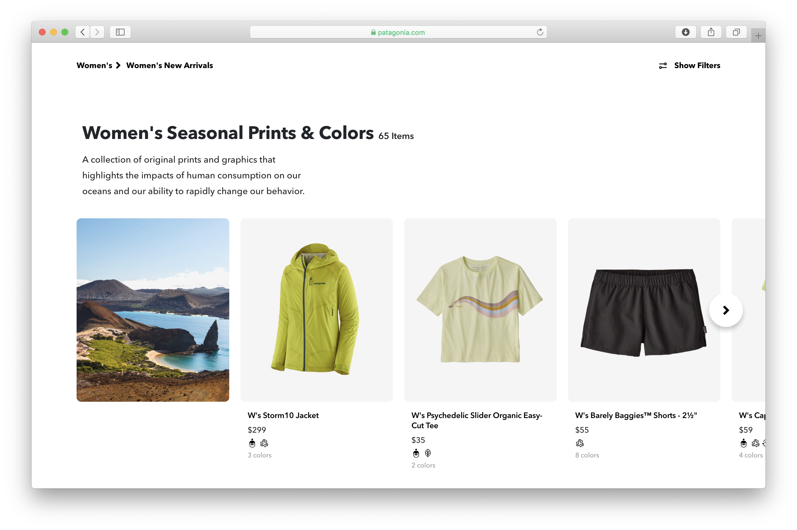
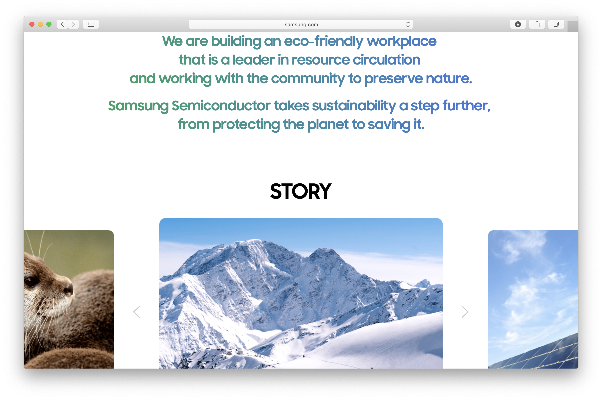
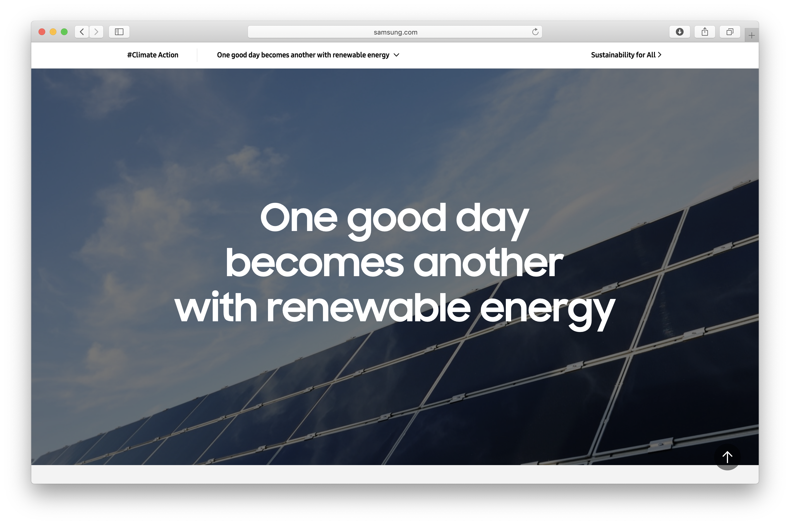

Final project proposal
Introduction
Green Spaces
A second hand store selling apparel (hoodies, tshirts, totes, postcards, posters,etc.) made from only upcycled, reusable, or compostable material
Target audience
Both females and males between the ages of 15-40 interested in sustainability, enviornmentalism and unique upcycled pieces.
Their primary goals are to purchase sustainable apparel and merchandise with the goal of lessening their carbon footprint.
Comparative analysis
Organic Basics

Patagonia
 Samsung
 Website content
Shop
[forestry]
new arrivals
[beige canvas printed tote]
[beige canvas printed hoodie]
[carbon footprint recipet poster]
About
Green spaces puts the planet and its people at the forefront of our attention. We are mindful of where our clothing comes from each thread's very beginning– where we get our materials, how its manufactured, the carbon footprint from our factory to your home, and even where it will end up after it has run its course in your closet.
[recycled materials]
fast fashion and planned obsolescence
[clothing waste]
the benfits of upcycling
[upcycled piece]
FAQ
Sustainability requires transparency and we understand it is nearly impossible to achieve a truly ethical and sustainable culture under capatalism. Learn more about your consumer habits and how individual actions take part in protecting the people and the planet.
What am I wearing?
recycled nylon, organic cotton, recycled paper, recycled wool
[fabrics]
How is it made?
our factory is equipped with solar panels to optimize our carbon footprint and run on 100% solar, renewable energy. We are committed to treating our employees fairly through pay and practice.
[solar panels]
What happens when my item has run its course?
Our items are made to last, but if its time to put the piece to rest– turn it into something new! Try dyeing your fabric, turn it into a pillow case, pass it down to someone who will love it or send it back to us so we can recycle it for you.